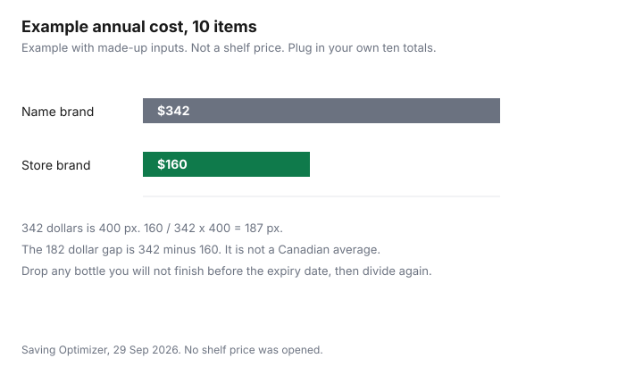

Personal Care · Canada
Pharmacy Brands Worth Switching To: Which Toiletries to Demote to Store Brand and Which to Keep Premium
In Canada, cotton, bar soap, body wash, basic moisturiser and mouthwash are usually worth switching to a pharmacy store brand after you compare size and ingredients. Keep a premium shampoo, deodorant, cleanser or razor when fragrance, a named active or fit is the reason you buy it. A lower price on a toiletry is a saving only when you would have bought the other bottle anyway, and only for the amount you will use before it expires. This page is the personal-care companion to the household store-brand guide and the over-the-counter medicine guide. Cleaning products and paper stay on the household page. A drug identification number stays on the medicine page. Nothing here ranks a banner, a moisturizer, or a sunscreen, and nothing here is medical advice.
Key takeaways
- Shoppers Drug Mart’s brands page, as of 29 Sep 2026, describes Life Brand as a private-label health line, including oral care, and Quo Beauty as a colour-cosmetics line. It does not name a contract manufacturer.
- Loblaws, No Frills, Sobeys, Walmart and Metro toiletry private labels are not confirmed here, so those cells say so.
- Cotton, bar soap, body wash, a basic moisturiser, and mouthwash are switch rows: compare size and the ingredient list. Toothpaste and sunscreen: look up a DIN or an NPN if the package prints one. Do not turn that lookup into an efficacy claim.
- Shampoo, deodorant, facial cleanser, and razors are test rows. Keep a premium product when fragrance, a named active, or fit is the reason you buy it.
- The 10-item annual table is an example with made-up inputs.
Who makes store-brand personal care and how to compare ingredient lists
The banner on the bottle is a retailer brand. It is not, by itself, the name of the factory.
Shoppers Drug Mart’s corporate brands page, as of 29 Sep 2026, says Life Brand was created in 1962 as a private-label alternative and that there are over 2,000 Life Brand products in health categories, including over-the-counter medications, vitamins, first aid, and oral care. The same page describes Quo Beauty as a colour-cosmetics line with more than 1,000 products, and it lists President’s Choice and SANIS. SANIS is described there as medication, so it is not a toiletry switch. The page does not name the company that manufactures Life Brand shampoo or Quo Beauty lipstick. Do not fill that gap with a guess.
Compare two packages in this order. Read the ingredient list in the order each package prints it. If a package prints a DIN, search that number in Health Canada’s Drug Product Database, whose search page, as of 29 Sep 2026, offers a search by DIN, by active ingredient, and by status. If a package prints an NPN, search Health Canada’s Licensed Natural Health Products Database, as of the same date, which shows a licence status and a market-status field. A marketed drug record and an active natural-health licence are database facts. They are not a statement that the store brand feels the same on your skin. The generic and brand guide is the prescription version of interchange. A cosmetic has no DIN. Do not invent one.
Switch now: cotton, soap, body wash, basic moisturiser, mouthwash
These five are the demote-first rows because the shopping comparison is size, scent, and the printed ingredient list, not a clinical claim. Cotton rounds or squares: compare the count and whether the package says 100 percent cotton.
Bar soap: compare the weight in grams and the first ingredients. Body wash: compare the price per 100 millilitres once you are in the store, and reject a larger bottle you will not finish. A basic moisturiser, the kind without a drug or natural-health number on the box, is the same kind of comparison: ingredient list, size in millilitres, and whether you already react to a fragrance. Mouthwash: read the ingredient list and the volume. This guide does not cite a therapeutic claim for a store-brand mouthwash, so it does not make one.
Switch means buy the store brand once, on a size you will finish, and keep the receipt. Shoppers Drug Mart’s returns page, updated 24 Apr 2026 and current as of 29 Sep 2026, says refunds and exchanges are available with the original receipt within 30 days, and that a Shoppers or Loblaw brand product such as Life Brand, Quo Beauty, or President’s Choice can be returned with the receipt or the original package within 30 days if you are not satisfied with the quality, with some exclusions. Clearance and products marked final sale are final on that page. A switch you cannot take back is a test you should not run on a final-sale sticker.
Test first: shampoo, deodorant, facial cleanser, razors
Shampoo, deodorant, facial cleanser, and cartridge razors change how a product feels, smells, or fits. Buy the smallest size, use it for two weeks, and write down whether you finished it or went back.
A shampoo that leaves hair in a way you will not tolerate is not cheaper. It is waste. Deodorant is the same test: the ingredient list can match and the scent can still fail. A facial cleanser is a test when it is a cosmetic. If the package prints a DIN or an NPN, move it to the keep-premium check and look the number up before you call it a basic cleanser.
Razors are a test of fit, not of a logo. A store-brand cartridge that does not seat on the handle you own is a different system. The per-shave guide is where the arithmetic lives. This page does not claim a store-brand blade is compatible with a name-brand handle. Read the package. If it does not say which handle it fits, do not assume it.
Keep premium when: sensitive skin, specific actives, fit and feel matter
Keep the product you already tolerate when three things are true. Your skin reacts to a fragrance, a preservative, or another ingredient you have already identified.
The package names an active you chose on purpose, such as a fluoride toothpaste or a sunscreen active, and the store brand does not show the same active at the same strength. Or the fit is the product: a razor cartridge, a cleanser texture, a moisturiser you will actually use. A premium you cannot explain is a candidate for the test column, not a permanent exception.
Sunscreen and fluoride toothpaste are not efficacy claims on this page. Compare the DIN or the NPN and the active ingredient printed on the label. This guide states no expiry interval and no SPF rule of its own. The Costco personal-care guide is the bulk-size version of the same caution: a lower unit price on a tube you will not finish is not a saving. Points on the purchase are the PC Optimum guide. A point does not fix the wrong active.
Canadian private-label map by retailer
Name a label only when a page on that retailer’s site said it. Costco’s member-disclaimer page, as of the same date, includes site navigation for Kirkland Signature and for a Personal Care group that lists bath and body care, oral care, shaving and hair removal, and sunscreen. That is a navigation fact. It is not a list of Kirkland toiletries, and it is not a statement that Kirkland is made by a named national brand.
| Banner | Label this page will name | What the page says |
|---|---|---|
| Shoppers Drug Mart | Life Brand, described as a health private label including oral care. Quo Beauty, described as colour cosmetics. President’s Choice is named on the same brands page and on the returns page as a Shoppers or Loblaw brand example. | corporate.shoppersdrugmart.ca brands page, and the returns page updated 24 Apr 2026 |
| Loblaw grocery banners | No grocery-banner label is named here. President’s Choice appears on the Shoppers pages above, which is not a Superstore shelf. | Not confirmed here |
| Walmart | None. | Not confirmed here |
| Costco | Kirkland Signature, as a brand link on costco.ca. Personal-care headings in the navigation included bath and body, oral care, shaving, and sunscreen. | costco.ca and the member disclaimer, as of 29 Sep 2026. |
| Sobeys | None. | Not confirmed here |
| Metro | None. The homepage did not name a toiletry private label. | metro.ca homepage, as of 29 Sep 2026 |
Annual savings table for a 10-item switch
Example with made-up inputs. The dollars below are not Shoppers, Walmart, Costco, or any other shelf.
They exist so the division is visible: ten annual totals, a name-brand column and a store-brand column. Name-brand sum: 24 + 18 + 36 + 40 + 20 + 28 + 48 + 32 + 36 + 60 = 342. Store-brand sum: 10 + 8 + 16 + 18 + 10 + 14 + 22 + 16 + 18 + 28 = 160. The gap is 182 only inside this example. Your gap is the ten prices you write in the blank column, after you have decided the row is a switch or a successful test, and after you have dropped any bottle you will throw out.
| Item | What to compare | Name brand, made-up annual $ | Store brand, made-up annual $ | Your price |
|---|---|---|---|---|
| Cotton | Count, fibre | 24 | 10 | |
| Bar soap | Grams, ingredient list | 18 | 8 | |
| Body wash | Millilitres, ingredient list | 36 | 16 | |
| Basic moisturiser | Millilitres, fragrance | 40 | 18 | |
| Mouthwash | Millilitres, ingredient list | 20 | 10 | |
| Toothpaste | DIN or NPN if printed, active, size | 28 | 14 | |
| Shampoo | Test the smallest size | 48 | 22 | |
| Deodorant | Test scent and ingredient list | 32 | 16 | |
| Facial cleanser | Test, unless a DIN or NPN is printed | 36 | 18 | |
| Razors | Fit to the handle, then cost per shave | 60 | 28 |
| Toiletry | Column | Why | Compare on the label |
|---|---|---|---|
| Cotton | Switch | Count and fibre, not a drug number | Count, fibre |
| Bar soap | Switch | Weight and ingredients | Grams, ingredient list |
| Body wash | Switch | Size you will finish | Millilitres, ingredient list |
| Basic moisturiser | Switch | Only if no DIN or NPN is printed | Millilitres, fragrance, ingredient list |
| Mouthwash | Switch | Volume and ingredients, no therapeutic claim made here | Millilitres, ingredient list |
| Toothpaste | Compare the active | A fluoride or other active is a label fact, not an efficacy claim | DIN or NPN if printed, active, size |
| Shampoo | Test | Feel and whether you finish the bottle | Ingredient list, smallest size |
| Conditioner | Test | Same test as shampoo | Ingredient list, smallest size |
| Deodorant | Test | Scent and skin tolerance | Ingredient list, size |
| Facial cleanser | Test | Move to the DIN or NPN check if a number is printed | Ingredient list, DIN or NPN if printed |
| Razors | Test | Fit before price | Handle compatibility printed on the package |
| Sunscreen | Keep until the numbers match | Drug or natural health product in Canada. This page does not assign a tariff code or an efficacy rank. | DIN or NPN, active, size, expiry date |

Sources
- Shoppers Drug Mart, Our brands, corporate.shoppersdrugmart.ca, as of 29 Sep 2026. Life Brand described as a private label since 1962, over 2,000 products in health categories including oral care. Quo Beauty described as colour cosmetics, more than 1,000 products. President’s Choice and SANIS also named. No contract manufacturer named.
- Shoppers Drug Mart, Returns and exchanges, page updated 24 Apr 2026, as of 29 Sep 2026. Receipt and 30 days for a general refund or exchange. Life Brand, Quo Beauty, and President’s Choice named as brand examples that can be returned within 30 days if you are not satisfied with the quality, some exclusions. Clearance and final-sale items are final.
- Health Canada, Drug Product Database search, health-products.canada.ca/dpd-bdpp, as of 29 Sep 2026. Search by DIN, active ingredient, or status.
- Health Canada, Licensed Natural Health Products Database search, health-products.canada.ca/lnhpd-bdpsnh, as of 29 Sep 2026. Licence status and market status.
- Costco.ca and the member disclaimer, as of 29 Sep 2026. Kirkland Signature brand link. Personal Care navigation headings included bath and body, oral care, shaving, and sunscreen.
- The annual dollars are made-up inputs.
Frequently asked questions
Are store-brand toiletries as good as name brands?
This page does not say they work the same. Compare the ingredient list, the size, and any DIN or NPN printed on the package, using the Drug Product Database and the Licensed Natural Health Products Database. A database match is a shopping comparison, not a promise that the products feel the same. This is education, not medical advice.
Which toiletries are safe to switch to store brand?
Cotton, bar soap, body wash, a basic moisturiser without a DIN or NPN, and mouthwash are the switch rows, because the comparison is size and the ingredient list. Toothpaste and sunscreen stay on a compare-the-active row: look up a DIN or an NPN if the package prints one, and do not treat a lower price as an efficacy claim. The switch column is a method, not a ranking of banners.
When is it worth keeping a premium product?
Keep the product you already use when your skin reacts to an ingredient you have identified, when the package names an active you chose on purpose, or when fit and feel are the reason you buy it. A store brand that does not list that active is a different product. Write down why you are keeping it so the premium is a decision.
How do I compare ingredient lists?
Put the two packages side by side and read each ingredient list in the order the package prints it. If either package shows a DIN, search that number in the Drug Product Database. If it shows an NPN, search the Licensed Natural Health Products Database. Do not call them the same product when the active or the form differs.
Who makes store-brand personal care products?
Shoppers Drug Mart’s brands page, as of 29 Sep 2026, describes Life Brand as its private-label health line, including oral care, and Quo Beauty as its colour-cosmetics line. That page does not name a contract manufacturer.
Researched and drafted with AI assistance and fact-checked against official Canadian sources. How we create content.